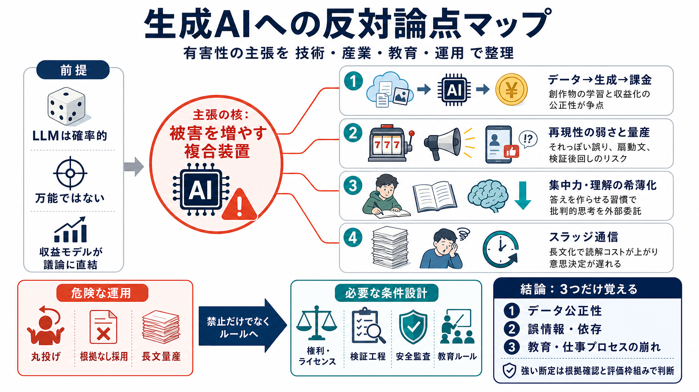

Generative AI Copyright: Law, Litigation & Best Practices in 2026
AI Code Review ToolsAI Coding BenchmarkOpen Source AI CodingAgentic CodingAI Code. Agentic AI ERPAgentic CLIAI Agent Per…

AI Code Review ToolsAI Coding BenchmarkOpen Source AI CodingAgentic CodingAI Code. Agentic AI ERPAgentic CLIAI Agent Per…
U.S. Copyright Office Copyright and Artificial Intelligence, Part 3: Generative AI Training. 61 U.S. Copyright Office Co…
# Generative AI Training and Copyright Law. Training generative AI models requires extensive amounts of data. In the USA…
[Skip to main content](https://www.reuters.com/legal/legalindustry/copyright-law-2025-courts-begin-draw-lines-around-ai-…